Tarot-Karten zum Ausdrucken
Zum Buch „Der erste Schritt ins Tarot". Hier lädst du die Karten kostenlos herunter und druckst sie selbst. Es dauert etwa zehn Minuten, und du brauchst nur einen Drucker oder einen Copyshop.
Öffne diese Seite am Computer (nicht am Handy). Das Drucken und das Übertragen auf einen USB-Stick gehen dort am einfachsten.
Datei herunterladen
Klicke auf den blauen Knopf. Es öffnet sich eine PDF-Datei mit allen Karten (4 Seiten, 6 Karten pro Seite).
Karten herunterladenPDF-Datei, 7.4 MBWenn sich die Datei im Browser öffnet, klicke oben rechts auf das Symbol mit dem Pfeil nach unten oder auf „Speichern". Auf dem Mac heißt der Ordner meistens „Downloads", bei Windows auch.
Wie willst du drucken?
Such dir eine der drei Möglichkeiten aus.
Am besten: Farblaserdrucker ★★★
Das Ergebnis ist scharf, die Farben stimmen, und nichts verschmiert. Hast du so einen Drucker zu Hause oder im Büro, nimm ihn.
Sehr gut: Copyshop oder Druckerei ★★★
Wenn du keinen Farblaserdrucker hast, ist das die einfachste Lösung. Das kostet für 4 Seiten nur wenige Euro.
- Kopiere die PDF-Datei auf einen USB-Stick. Nimm den Stick mit.
- Sag im Laden genau dies: „Bitte diese Datei in Farbe auf A4 drucken, auf Karton mit 200 bis 250 Gramm, nur Vorderseite, in Originalgröße, ohne Anpassen."
- Frag gleich, ob sie die Karten schneiden können. Dann bist du fertig.
Geht auch: Tintenstrahldrucker ★
Das klappt, aber die Tinte kann verschmieren oder bei Feuchtigkeit verlaufen.
- Lass die Blätter nach dem Drucken mindestens eine Stunde liegen, bevor du sie anfasst.
- Danach kannst du die Karten mit Fixierspray oder Klarlack besprühen. Teste das vorher an einem Rest oder einer Karte, die dir nicht wichtig ist, denn nicht jede Tinte verträgt jeden Lack.
Drucken (nur wenn du selbst druckst)
Öffne die PDF-Datei und wähle „Drucken". Stelle diese Dinge ein:
| Papierformat | A4 |
| Größe / Skalierung | 100 % oder „Tatsächliche Größe". Nicht „An Seite anpassen" und nicht „Verkleinern". Sonst sind die Karten zu klein. |
| Farbe | Farbe (nicht Schwarzweiß) |
| Seiten | Einseitig. Die Karten haben nur eine Vorderseite. |
| Qualität | Hoch oder „Foto" |
| Papier | Am besten Karton mit 200 bis 250 g/m². Dein Drucker muss das annehmen. Schau in sein Handbuch unter „Papierstärke" nach. Wenn nicht, nimm normales Papier und lass es im Copyshop auf Karton kleben, oder nimm den Copyshop (Möglichkeit 2). |
Drucke zuerst eine Seite und schau, ob alles gut aussieht. Erst dann den Rest.
Ausschneiden
Um jede Karte stehen kleine Striche an den Rändern (Schnittmarken). Schneide so, dass du die Striche nicht mehr siehst.
- Am einfachsten: eine Papierschneidemaschine (Rollenschneider oder Hebelschneider). Dort klappt es gerade.
- Mit der Schere: erst die Seite in Streifen schneiden, dann jeden Streifen in einzelne Karten.
- Jede Karte ist danach 6,2 × 9,6 cm groß.
Fertig
Mische die Karten, so wie es im Buch steht. Viel Freude damit.
Diese Karten sind in der Datei
22 Karten (Große Arkana). Die Karten der Kleinen Arkana kommen dazu, sobald sie fertig sind.
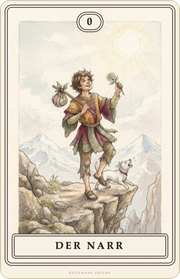
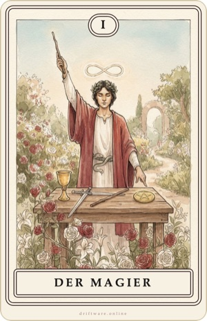
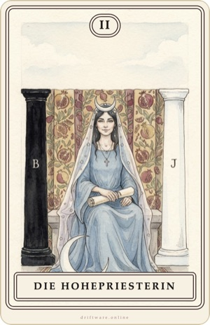
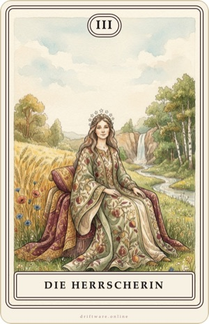
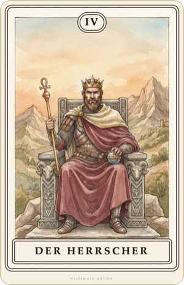
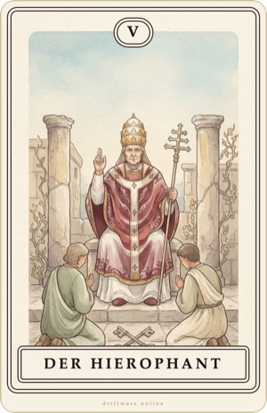
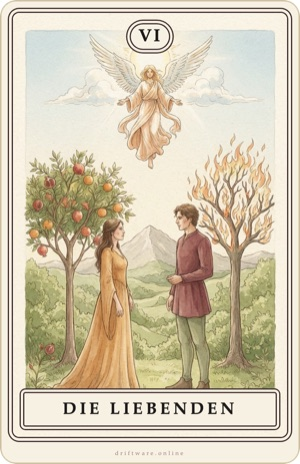
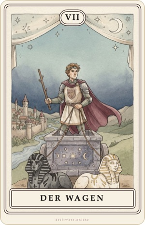
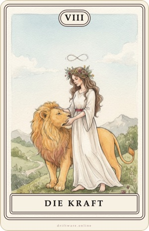
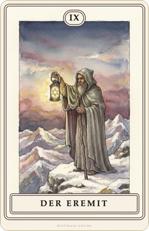
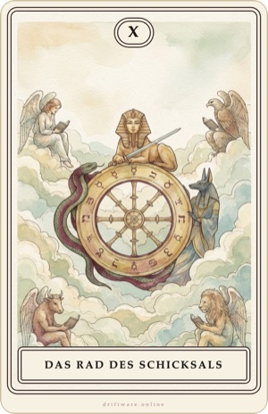
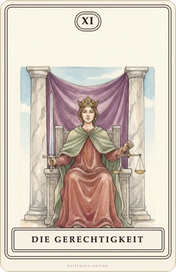
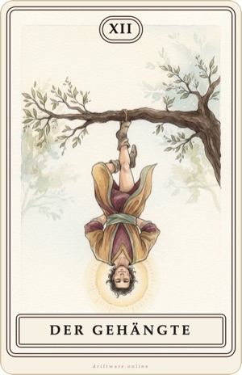
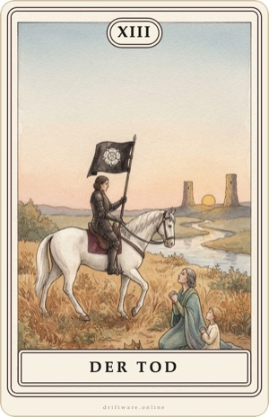
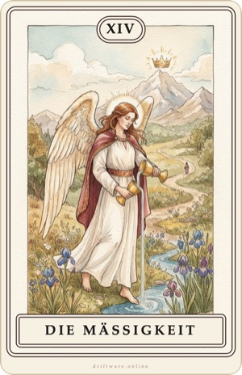
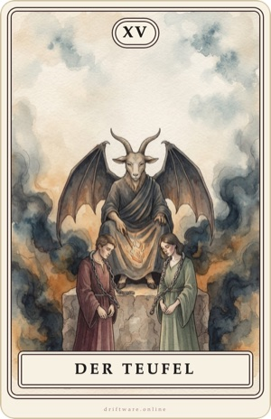
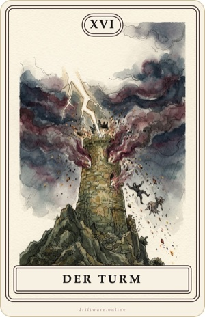
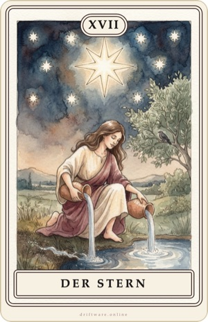
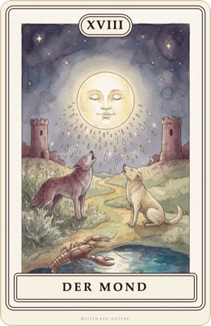
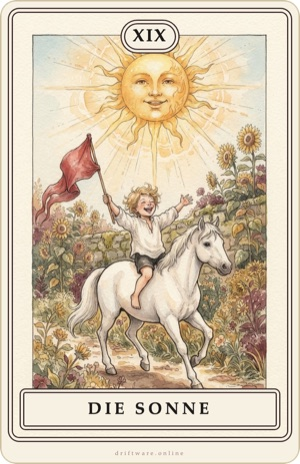
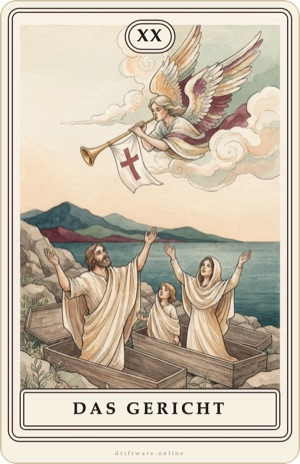
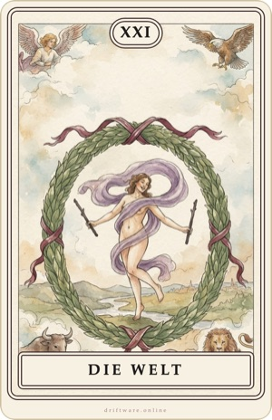
Nutzung: Du darfst die Karten für den persönlichen Gebrauch ausdrucken. Weitergabe, Verkauf und die Verwendung für eigene Kartendecks sind ohne Zustimmung nicht erlaubt. © 2026 Driftware. Die Bilder wurden nach eigenen Beschreibungen digital erzeugt und mit Bildbearbeitungsprogrammen gestaltet.
Fragen oder ein Fehler? info@driftware.online · Impressum